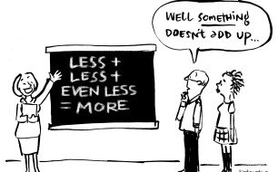

Journals for Computational Biology and Bioinformatics
- PLOS Computational Biology (IF 4.428)
- Proteins: Structure, Function, and Bioinformatics (Proteins) (IF 2.499)
- Physical Biology (PB) (IF 1.818)
- Physical Chemistry Chemical Physics (PCCP) (IF 3.567)
- Journal of Molecular Biology (JMB) (IF 5.067)
- Bioinformatics (IF 4.531)
- Biochemistry (IF 2.952)
- Biophysical Journal (IF 3.665)
- BMC Structural Biology (2.222)
- Current Opinion in Structural Biology (7.052)
- The Journal of Chemical Physics (IF 2.997)
- IEEE/ACM Transactions on Computational Biology and Bioinformatics (IF 2.428)
- Journal of Computational Biology (IF 1.191)
- Journal of Computer-Aided Molecular Design (IF 3.220)
- Journal of General Physiology (IF 4.258)
- Journal of Molecular Graphics and Modelling (IF 1.863)
- Physical Review Letters (PRL) (9.227)
- Proceedings of the National Academy of Sciences of the United States of America (PNAS, PNAS USA) (IF 9.58)
- Protein Science (IF 2.735)
Conferences/Workshops for Computational Biology and Bioinformatics
- Annual Meetings of Biophysical Society (BPS) Feb-Mar
- The Protein Society Annual Symposium Jul
- ACM Conference on Bioinformatics, Computational Biology and Biomedicine (ACM-BCB) Mar-Apr
- Workshop on Algorithms in Bioinformatics (WABI) Sep
- The IEEE International Conference on Bioinformatics and Biomedicine (BIBM) Nov-Dec
- APBC2020 – The 18th Asia Pacific Bioinformatics Conference Feb
- The Computational Structural Bioinformatics Workshop (CSBW 2019, CSBW 2020) Sep
- International Conference on Research in Computational Molecular Biology (RECOMB) Jun
Useful links
- Grammarly
Thesaurus
COCA: Corpus of Contemporary American English - Beall's List of Predatory Journals and Publishers ( new link , old link )
- Stop Predatory Journals
- Facebook - Predatory Journals
SUN lab info
- Download VPN (Virtual Private Network, AnyConnect) at https://downloads.its.psu.edu
- Using the Machines in the Sun Lab
- Unix/Linux Command Reference
- Vi Reference Card
- GNU Emacs Reference Card
- Program Practice: Project Euler, HackerRank, TopCoder, CodeChef
Fun Programming
Interestings
Fun

Source: The Daily, 2SER | 5 April - from CPD

Source: https://xkcd.com/371/